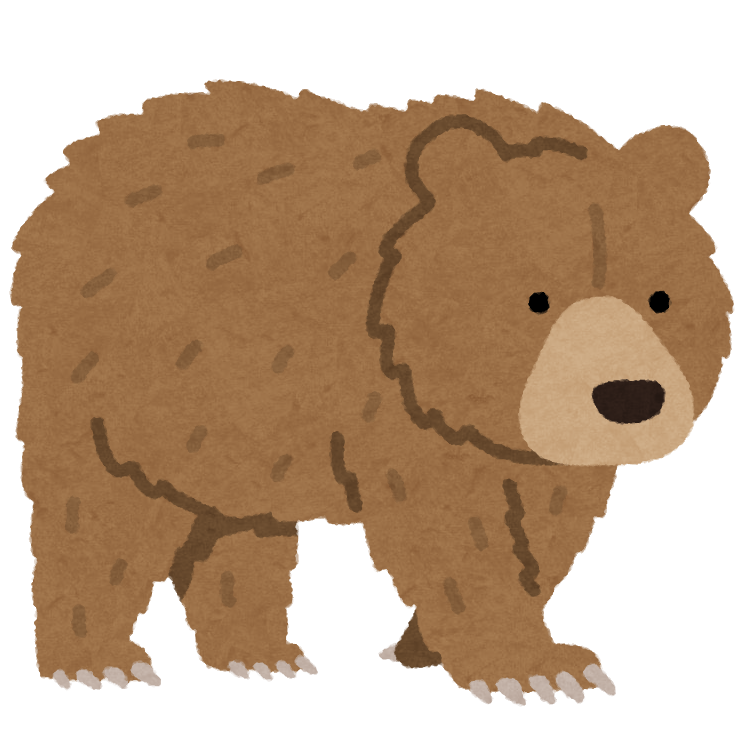

 Higuma, or the "Ezo brown bear," is a subspecies of the Asian brown bear found primarily in Hokkaido, Japan. These bears are notable for their impressive size and strength, making them one of the largest bear species in the world.
Ezorisu, or the "Hokkaido squirrel," is a subspecies of the Eurasian red squirrel found exclusively in Hokkaido, Japan. These charming creatures are easily recognizable and play an important role in the region's ecosystem
Shimafukuro, or the "Eurasian owl" (specifically the Ural owl), is a species of owl found in Hokkaido and other parts of East Asia. This beautiful bird is known for its distinctive appearance and haunting calls.
Shimaenaga, or the "Japanese long-tailed tit," is a small, distinctive bird native to Japan, including Hokkaido. Known for its charming appearance and social behavior, the shimaenaga is a favorite among birdwatchers.
They are so cute! Check this out!!Clione, commonly known as the "sea angel," is a small marine mollusk belonging to the family Clionidae. These fascinating creatures are often found in cold ocean waters, including those around Hokkaido.